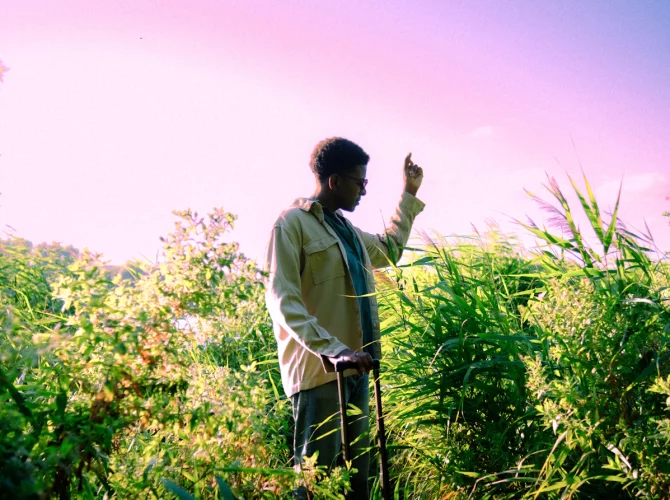

French singer-songwriter blending emotive lyrics with electronic and pop influences.
Hervé is a French singer-songwriter known for his heartfelt lyrics and a sound that merges electronic beats with contemporary pop melodies. His music often explores themes of love, identity, and introspection, resonating with a wide audience in the Francophone music scene.
Hervé's music is characterized by a seamless fusion of electronic and pop elements, paired with emotionally charged lyrics that connect deeply with listeners. His ability to craft catchy yet introspective tracks has earned him recognition in the French music industry.
From Ivory Coast to Amsterdam, that’s the journey Hervé undertook before making a name for himself as a club culture influencer with countless talents. He is co-founder of the record label Polychrome Audio, the club night Interfering Grounds, and creative hubs and networks like Noord Space and Misuse. But above all, Hervé—also one half of Noord Loop—does his thing behind the decks, where his groovy, progressive, and psychedelic house and techno sets bubble with acid synths, rolling basslines, and cosmic melodies. Exactly the kind of vibe that gets festival-goers dancing out of their rabbit holes. Image by: Marius Renard
Van Ivoorkust naar Amsterdam, dat is de route die Hervé aflegde alvorens naam te maken als clubcultuurinfluencer met duizend pootjes. Zo is hij medeoprichter van platenlabel Polychrome Audio, clubnacht Interfering Grounds en creatieve hotspots en netwerken als Noord Space en Misuse. Maar bovenal doet Hervé, overigens ook de helft van Noord Loop, zijn ding achter de decks, waar zijn groovy, progressieve en psychedelische house- en technosets bubbelen van de acidsynths, rollende bassen en kosmische melodielijnen. Precies datgene waarvoor je als dansgrage festivalganger uit je rabbit hole rolt. Beeld door: Marius Renard
Sunday, July 05
17:30 - 19:30
REX
♂️ Male
No